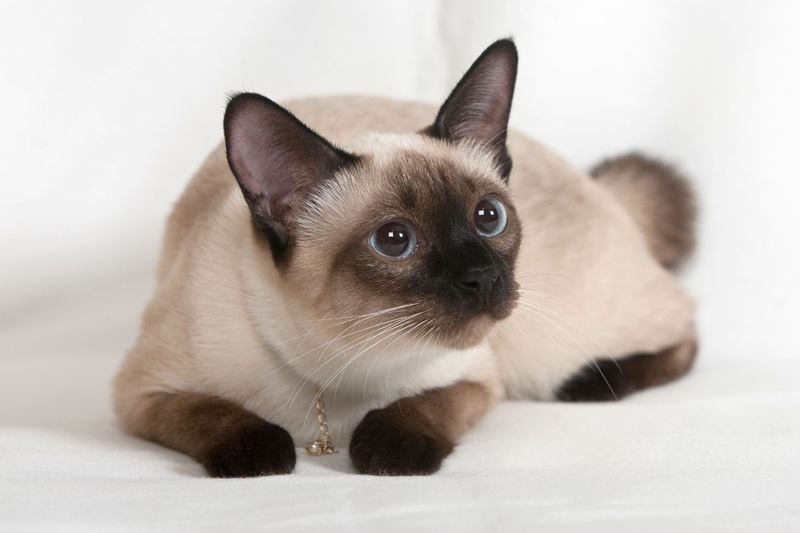

猫猫图书馆
猫猫图书馆
暹（xiān）罗猫是世界著名的短毛猫，也是短毛猫的代表品种。种族原产于暹罗 （今泰国），故名暹罗猫。在200多年前，这种珍贵的猫仅在泰国的皇宫和大寺院中饲养，是足不出户的贵族。 暹罗猫能够较好适应主人当地的气候，且性格刚烈好动，机智灵活，好奇心特强，善解人意。
|
|
|---|---|
|
 暹（xiān）罗猫是世界著名的短毛猫，也是短毛猫的代表品种。种族原产于暹罗 （今泰国），故名暹罗猫。在200多年前，这种珍贵的猫仅在泰国的皇宫和大寺院中饲养，是足不出户的贵族。 暹罗猫能够较好适应主人当地的气候，且性格刚烈好动，机智灵活，好奇心特强，善解人意。 |
|
| 版权所有© LHT | |